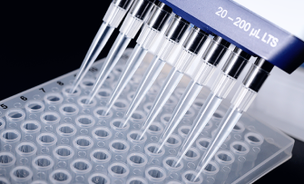
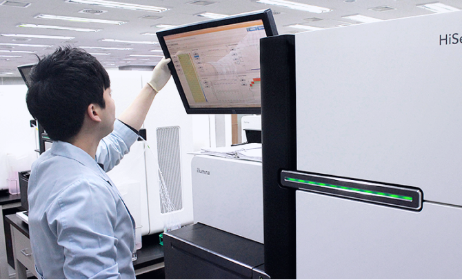

Macrogen established the Precision Medicine Institute in 2016 to promote research in the field of precision medicine. The institute has enhanced partnerships with top-tier medical professionals and scientists around the world. It leverages the company’s cutting-edge genomic analysis technologies and the hospital’s excellent clinical research systems to develop various personalized medicine services while pursuing its dedication to achieving research progress with regard to basic medical science. These R&D efforts are intended to help develop NGS-based companion diagnostic systems, circulating tumor DNA analysis, and circulating tumor cell analysis, through which Macrogen expects to be able to develop more accurate and faster testing services for precision medicine.
Precision medicine is a new medical paradigm for the future, providing personalized disease prediction and prevention, as well as personalized diagnosis and treatment services based on genomic data, lifestyle habits, and medical history. Notably, it accurately recognizes individuals' genetic differences through genomic analysis and utilizes this information for personalized diagnosis and treatment. Going forward, Macrogen Precision Medicine Institute will contribute to the realization of precision medicine in Korea and Asia based on the genetic mutation DB obtained from Asians through large-scale genome analysis.
